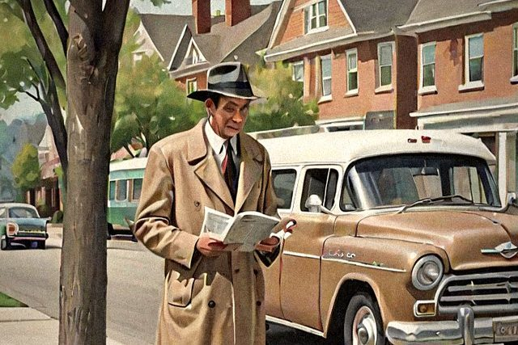

Chapter One · Skills 01–07So You're Being Watched
The gray van, the man behind the newspaper and the camera in the hedge
- Noticing the Gray Van
- Spotting the Man Behind the Newspaper
- Finding the Camera in the Hedge
- Waving to the Van Every Morning
- Telling a G-Man by His Hat
- Meeting the Neighbors Who Never Unpack
- Keeping a Nice Face for the Camera